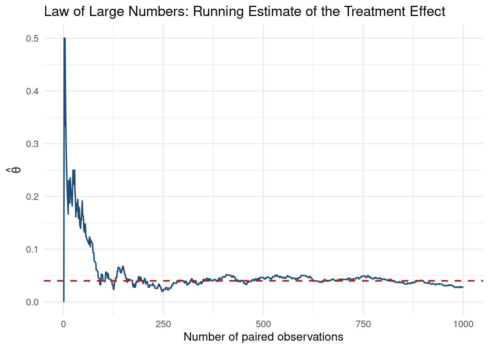
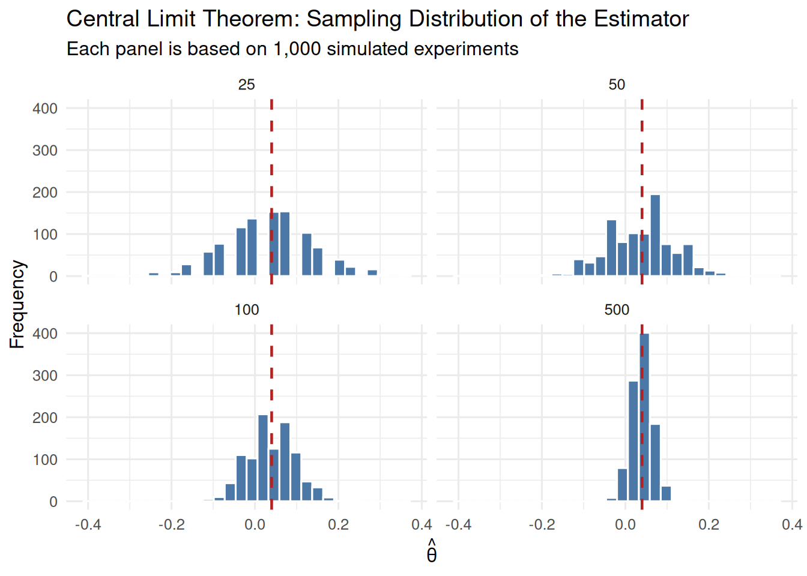

Key Insight: Small differences in wording can lead to statistically significant changes in user behavior, but improper testing practices (like peeking) can lead to false conclusions.
Introduction
In digital marketing, even small changes in wording can influence whether a visitor takes action. On a website landing page, one of the most important actions is signing up for the newsletter. To improve that sign-up rate, we want to test which of two possible calls to action (CTAs) is more effective.
The two versions are:
CTA A: “Sign up for our newsletter here!”
CTA B: “Stay up to date by signing up!”
To compare them fairly, we run an A/B test. In an A/B test, visitors are randomly assigned to see one of two alternatives, and we then compare the outcome across groups. In this case, the outcome is whether the visitor signs up for the newsletter. Random assignment is what allows us to interpret differences in sign-up rates as evidence about the CTA wording itself rather than about differences in the visitors who happened to see each version.
The A/B Test as a Statistical Problem
We can frame this experiment as a simple statistical problem. Each visitor either signs up or does not sign up, so each outcome can be modeled as a draw from a Bernoulli distribution with parameter \(\pi\), where \(\pi\) is the probability of signing up.
Because the CTA shown to a visitor may affect that probability, we allow the parameter to differ across groups. Visitors who see CTA A have sign-up probability \(\pi_A\), while visitors who see CTA B have sign-up probability \(\pi_B\). Each observation is therefore either 1 (the visitor signs up) or 0 (the visitor does not).
The quantity we care about is the difference in the true sign-up rates:
\[
\theta = \pi_A - \pi_B
\]
Since we do not observe the full population of visitors, we estimate this quantity using sample data. Our estimator is the difference in sample means:
\[
\hat{\theta} = \bar{X}_A - \bar{X}_B
\]
Because the data are binary, these sample means are just the observed sign-up proportions in each group. That means \(\bar{X}_A = \hat{\pi}_A\) and \(\bar{X}_B = \hat{\pi}_B\). So in practice, our estimator is simply the observed conversion rate for CTA A minus the observed conversion rate for CTA B.
Simulating Data
In a real experiment, the true values of \(\pi_A\) and \(\pi_B\) would be unknown, which is exactly why we would need to run the test. For this exercise, however, we set those values ourselves so that we can study how the estimator behaves when we know the truth.
Suppose that:
\(\pi_A = 0.22\)
\(\pi_B = 0.18\)
This implies a true treatment effect of:
\[
\theta = 0.04
\]
The following code simulates 1,000 visitors in each group.
These simulated results give us one realized experiment. The observed sign-up rates will not be exactly 0.22 and 0.18 because of sampling variation, but they should be reasonably close.
The Law of Large Numbers
The Law of Large Numbers (LLN) says that as the sample size grows, the sample mean converges to the population mean. In our setting, that matters because our estimator \(\hat{\theta} = \bar{X}_A - \bar{X}_B\) should get closer to the true value \(\theta\) as we collect more data.
To illustrate this, we compute the element-wise differences between the CTA A and CTA B outcomes and then calculate the cumulative average of those differences. This shows how the running estimate changes as more observations are added.

At the beginning of the plot, the running estimate jumps around substantially because there is very little data and randomness dominates. As the number of observations increases, those swings get smaller and the estimate settles down near the true value of 0.04. This is the key intuition behind the LLN: large samples make our estimates more stable and more trustworthy.
Bootstrap Standard Errors
Now that we trust the estimator itself, the next question is how precise it is. A point estimate such as \(\hat{\theta}\) tells us the most likely effect in our sample, but it does not tell us how uncertain that estimate is. To describe uncertainty, we need a standard error and, from it, a confidence interval.
A natural way to estimate that uncertainty is the bootstrap. The bootstrap is a resampling method that avoids relying entirely on a closed-form formula. Instead, we repeatedly sample with replacement from the observed data, recompute the statistic of interest for each resample, and examine how much those resampled estimates vary. The standard deviation of those bootstrap estimates is our bootstrap estimate of the standard error.
We follow four steps:
Draw a bootstrap resample of size 1,000 from CTA A and another of size 1,000 from CTA B.
Compute \(\hat{\theta}^* = \bar{X}_A^* - \bar{X}_B^*\) for that resample.
Repeat this process 1,000 times.
Take the standard deviation of the 1,000 bootstrap estimates.
boot_estimates <-replicate(1000, { resample_a <-sample(cta_a_results, n, replace =TRUE) resample_b <-sample(cta_b_results, n, replace =TRUE)mean(resample_a) -mean(resample_b)})boot_se <-sd(boot_estimates)
For comparison, the analytical standard error for the difference in means of two independent Bernoulli samples is:
The bootstrapped standard error and the analytical standard error are very close, which is reassuring. It suggests that both approaches are capturing the same underlying sampling uncertainty. Using the bootstrapped standard error, the 95% confidence interval for \(\theta\) is \([-0.0079, 0.0619]\).
This interval gives a range of plausible values for the true treatment effect. Interpreted in frequentist terms, if we repeated this experiment many times and built a confidence interval the same way each time, about 95% of those intervals would contain the true value of \(\theta\).
The Central Limit Theorem
The Central Limit Theorem (CLT) tells us that regardless of the shape of the underlying population distribution, the sampling distribution of the sample mean becomes approximately Normal as the sample size gets large. Since our estimator is a difference in sample means, the same logic applies to \(\hat{\theta}\).
To show this, we simulate 1,000 estimates of \(\hat{\theta}\) for four different sample sizes: \(n \in \{25, 50, 100, 500\}\). Each histogram below shows the sampling distribution of the estimator at a given sample size.

When the sample size is small, the histogram is rougher and can look somewhat irregular. As the sample size increases, the distribution becomes smoother and more bell-shaped. This is exactly what the CLT predicts. The theorem is what makes Normal-based inference possible in large-sample A/B tests, even though the raw data themselves are Bernoulli rather than Normal.
Hypothesis Testing
Once we know from the CLT that \(\hat{\theta}\) is approximately Normal in large samples, we can use that result for hypothesis testing. The null hypothesis is that the two CTAs perform equally well:
\[
H_0: \theta = 0
\]
The alternative is that the CTAs differ:
\[
H_1: \theta \neq 0
\]
A hypothesis test asks whether the data provide enough evidence against the null. To answer that, we standardize the observed estimate using its standard error:
\[
z = \frac{\hat{\theta} - 0}{SE(\hat{\theta})}
\]
The logic is straightforward. First, by the CLT, \(\hat{\theta}\) is approximately Normal when the sample size is large. Under \(H_0\), that Normal distribution is centered at 0. Second, when we divide by the standard deviation, we get a statistic that is approximately standard Normal. That means under the null we know the reference distribution of \(z\), and that lets us compute a p-value.
This procedure is sometimes casually called a t-test, but the distinction is worth noting. The classical t-test comes from Normally distributed data with an estimated variance, which leads to an exact t distribution. Our data are Bernoulli, not Normal, so there is no exact t-distribution result here. Instead, the CLT gives us approximate Normality, so this is more naturally viewed as a large-sample z-test. In practice, with large samples, the t and Normal reference distributions are nearly identical, so the numerical difference is negligible.
The p-value is approximately 0.13, which is greater than the standard significance level of 0.05. Therefore, we fail to reject the null hypothesis. This means there is not sufficient evidence to conclude that the two CTAs have different conversion rates. While CTA A shows a higher observed signup rate in this sample, the difference is not statistically significant.
This result is consistent with the confidence interval, which includes zero, further suggesting that the true effect may be small or nonexistent.
The T-Test as a Regression
The two-sample comparison above is mathematically equivalent to a simple linear regression. That connection matters because regression is a flexible framework that extends naturally to richer experiments with controls, interactions, or multiple treatment groups.
To see the equivalence, we stack the data from both groups into one dataset with:
an outcome \(Y_i\), equal to 1 if the visitor signs up and 0 otherwise
an indicator \(D_i\), equal to 1 if the visitor saw CTA A and 0 if the visitor saw CTA B
We then estimate:
\[
Y_i = \beta_0 + \beta_1 D_i + \varepsilon_i
\]
In this model, \(\beta_0\) is the expected outcome when \(D_i = 0\), which is the mean of group B and therefore estimates \(\pi_B\). The quantity \(\beta_0 + \beta_1\) is the expected outcome when \(D_i = 1\), which is the mean of group A and therefore estimates \(\pi_A\). It follows that \(\beta_1 = \pi_A - \pi_B = \theta\), so the OLS estimate \(\hat{\beta}_1\) is the same quantity as \(\hat{\theta}\).
reg_data <-tibble(Y =c(cta_a_results, cta_b_results),D =c(rep(1, n), rep(0, n)))model <-lm(Y ~ D, data = reg_data)reg_results <-tidy(model) |>select(term, estimate, std.error, statistic, p.value)reg_results |>gt() |>fmt_number(columns =c(estimate, std.error, statistic, p.value), decimals =4) |>tab_header(title ="Regression Version of the A/B Test")
Regression Version of the A/B Test
term
estimate
std.error
statistic
p.value
(Intercept)
0.1860
0.0126
14.7194
0.0000
D
0.0270
0.0179
1.5109
0.1310
The coefficient on \(D\) should match the difference in group means we computed earlier, up to small differences in the estimated standard error depending on the formula used. The broader point is that A/B testing is not separate from regression; it is a special case of it. That is useful because the regression framework makes it easy to expand the analysis when experiments become more complex.
The Problem with Peeking
Suppose your boss does not want to wait until the full sample of 1,000 visitors per group is collected. Instead, she wants to peek after every 100 visitors per group and stop the experiment as soon as one of those interim tests is significant at the 5% level.
This is problematic under classical frequentist inference. A single test at \(\alpha = 0.05\) has a 5% chance of a false positive when the null hypothesis is true. But if we test repeatedly on accumulating data, each peek creates another opportunity to observe a seemingly significant result just by chance. The overall probability of at least one false rejection across all those peeks is therefore much larger than 5%.
To demonstrate this, we simulate a world where the null is true: \(\pi_A = \pi_B = 0.20\), so there is no real difference between the CTAs.
The empirical false positive rate under peeking is much higher than the nominal 5% rate from a single pre-specified test. In practical terms, this means that repeated checking makes it too easy to declare a winner when there is no real treatment effect at all. For A/B testing, the lesson is clear: if interim looks are part of the design, they need to be handled with methods that explicitly adjust for repeated testing rather than with ordinary fixed-sample inference.
Conclusion
This A/B testing example illustrates several core ideas from classical frequentist statistics. The Law of Large Numbers explains why our estimator becomes more reliable as the sample grows. The bootstrap and analytical formula give us ways to quantify uncertainty. The Central Limit Theorem explains why a Normal approximation is appropriate for inference in large samples. Hypothesis testing then lets us decide whether the observed difference is large enough to rule out random chance, and the regression formulation shows that the same analysis can be expressed in a broader modeling framework.
Perhaps most importantly, the final simulation shows that correct inference depends not only on formulas but also on experimental discipline. Even a well-designed estimator can produce misleading conclusions if we repeatedly peek at results without adjusting our procedure. That is why careful design is just as important as careful analysis in A/B testing.